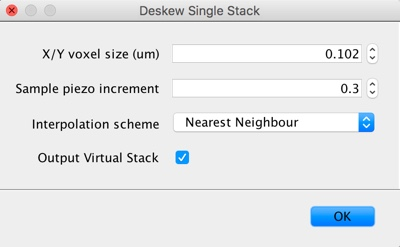

Introduction
Below we described basic usage of the llsm ImageJ/Fiji plugins. We assume that the llsm plugins have been installed as described in the Getting Started section.
Deskew and preview a single stack
This plugin is generally not all that useful but does give you a quick way to deskew and visualise a single stack (i.e., timepoint or channel) without loading the whole dataset.
- Start by opening a single stack in Fiji.
- Run
Plugins → LLSM → Deskew Single Stack - Enter parameters for deskewing (see Fig. 1)
- Click OK.
Table 1: Deskew Single Stack Parameters
| Name | Parameter Description |
|---|---|
| X/Y Voxel Size | Physical size of X and Y in voxel |
| Sample Piezo Increment | Interval of the sample piezo stage for each Z slice |
| Interpolation Scheme1 | Type of interpolation used for when shearing factor is not equivalent to the pixel size |
1Further information about interpolation schemes can be found in Deskew Information

Figure 1: Deskew Single Stack Parameters GUI
Deskew and preview a LLSM dataset (time series)
This plugin allows one to load, deskew and preview an entire LLSM dataset.
- Run
Plugins → LLSM → Deskew Time Series - Enter input directory and deskewing parameters (Fig 2. and Table 2).
- Click OK.
Table 2: Deskew Time Series Parameters
| Name | Parameter Description |
|---|---|
| X/Y Voxel Size | Physical size of X and Y in voxel |
| Incident Objective Angle | Angle between the stage and the illumination objective. |
| Interpolation Scheme1 | Type of interpolation used for when shearing factor is not equivalent to the pixel size |

Figure 2: Deskew Time Series Parameters GUI
Convert LLSM dataset
Allows one to load, deskew and output an LLSM dataset as either an HDF5 or OME-TIFF.
Documentation to follow…